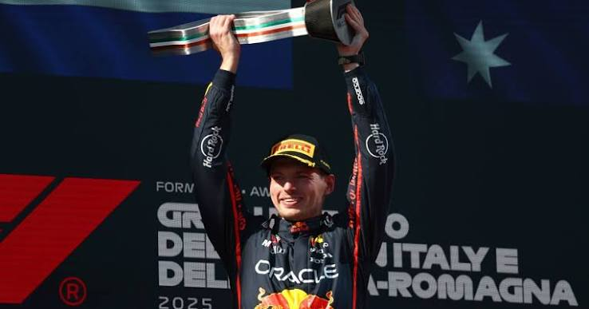
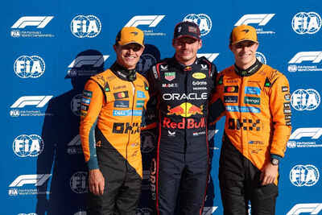
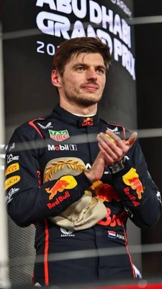

The Floodlit Hour
There is an hour on the Yas Marina evening when the desert forgets that it is a desert. The sun sinks behind the hotel that straddles the pit lane like a lit glass bridge; the sky bruises from apricot to indigo; and ten thousand lamps, each one a small decision made by an engineer, flare into a daylight that belongs to no hour of the clock. It is not night and it is not day. It is the one light in which a man may be forgiven for believing that time itself can be rearranged.
On 7 December 2025 three men sat inside that light with a crown between them. Lando Norris led the championship on 408 points. Max Verstappen, four times a World Champion and for most of the summer a spectator at his own title defence, had 396. Oscar Piastri, who had led the standings for most of the year, had 392. Verstappen's arithmetic was an austere little sentence: win, and pray that Norris stumbles. He had taken pole position. The Red Bull, an automobile that for months had been spoken of in the vocabulary of apology, waited on the grid like an animal that had finally decided to cooperate.
What follows is the story of how a champion arrived at that grid. It begins, as most great stories do, with a man who appeared to be losing.
A Winter of Uncertain Thrones
Every dynasty has a winter, though it rarely recognises the season while it is being lived. Verstappen arrived in 2025 with four consecutive championships in his luggage, the last three won with a Red Bull that had spent two years being the most complete racing car anyone had assembled. In 2023 he had won nineteen of the twenty-two Grands Prix, a statistic so lopsided that it had begun to resemble weather rather than sport. But weather changes. By the end of 2024 McLaren had won the constructors' championship for the first time since 1998, and the Red Bull that had once seemed to float above the rest of the field now seemed to labour, as if the air itself had grown heavier.
The cast had shuffled as well. Lewis Hamilton, the seven-time champion, had left Mercedes for Ferrari, a migration that carried the romantic weight of a pilgrim crossing a border. Sergio Pérez had gone from the seat beside Verstappen, and Liam Lawson had been promoted to replace him. In the paddock, where rumour is a form of currency, the talk was of whether a champion's greatness could survive the loss of the machinery that had amplified it. It was a fair question. Philosophers have long wondered whether a man makes his circumstances or his circumstances make him. The 2025 season was about to offer an unusually clear experiment.
Melbourne and Shanghai: The Shape of a Warning
Albert Park opened the year in the rain, and rain is a philosopher's weather: it reveals the difference between what a driver intends and what a surface permits. Norris won there. Verstappen was second, mastering the damp with the economy of a man who has done this before, and Piastri, the supposed favourite for the garden's quiet gold, slid to ninth. Nothing in the afternoon suggested that a hierarchy had altered. The Dutchman had lost a race, which champions do, and he had lost it narrowly.
Shanghai was the first genuine omen. Piastri took pole and won; Norris took second; Verstappen, fourth, was nearly a minute adrift of the McLarens in the minds of those who measured pace rather than position. Lewis Hamilton, newly clad in Ferrari red, won the sprint to a roar the paddock had not heard for years. Behind the scenes Red Bull made a quiet, ruthless change. Liam Lawson, two races into the season, was returned to the junior team, and Yuki Tsunoda was lifted into the seat beside Verstappen. It was the kind of move teams make when they suspect that the problem is not in the cockpit.
Suzuka: The Old Hand Returns
Suzuka is a figure of eight, a circuit that crosses over itself as if to remind the pilot that every ascent is secretly a descent. Verstappen took pole there and won, and the arrangement of that sentence was almost unfamiliar after the first two rounds. Norris was second and Piastri third, and McLaren, for a day, found the geometry of the place unkind.
It mattered less for the twenty-five points than for the evidence it offered. The Red Bull was a car on a knife's edge, but there was a man on the other side of the blade. A driver who can win with a machine that resists him is practising a different craft from one who wins with a machine that agrees.
Sakhir, Jeddah, Miami: A Papaya Spring
Then the year turned orange. Bahrain's desert evening was Piastri's, from pole, with Russell second and Norris third; Verstappen could do no better than fourth. In Jeddah, under the lights of that frightening street circuit where walls stand like patient executioners, Piastri won again, and Verstappen, second on the road, had been penalised for leaving the track while attacking at the first corner. Miami's humid, painted-concrete paddock gave Piastri a third consecutive win, with Norris second and Verstappen fourth. Three Grands Prix and a pattern was beginning to disclose itself: McLaren's car was gentle on its tyres and generous with its pace, and the championship was acquiring a leader who spoke softly and won emphatically.
The champion was no longer the sun. He had become a planet in someone else's system.
The Anatomy of a Slump
A slump in Formula 1 is rarely a single failure. It is a slow accretion of fractions: a car that rewards one tyre temperature and punishes another, a balance that is perfect in one corner and treacherous in the next, a qualifying lap that is a hundredth too slow and a starting slot that is one row too far back. Through the spring, Verstappen was scoring points the way a man bails a boat, steadily and without pretending the water was not rising. Fourth in China, fourth in Bahrain, fourth in Miami. Respectable results in any other year; in this one, they were the sound of a champion being quietly outpaced.
What interests the observer is not the arithmetic but the posture. The Verstappen of 2023 drove as if the circuit had been designed for him. The Verstappen of that spring drove as if the circuit had been designed against him, and he answered it with an almost stubborn attention to detail. There is a species of greatness that is only visible in adversity, as certain stars are only visible once the sun has gone down. The spring was the sun going down.
Imola and Monaco: The Mathematics of Patience
Imola in May is damp green hills and a circuit that remembers the dead. Piastri took pole, but Verstappen led at the start, and then he did what he has done more often than any man of his generation: he removed the possibility of being caught. It was a sixty-three-lap argument for the proposition that a bad car in the hands of an exceptional driver is still a weapon. Norris was second, Piastri third.
Monaco, by contrast, refused argument. Qualifying there is a sacrament; the race is its liturgy. Norris took pole and the win, Charles Leclerc was second on the Principality's own soil, Piastri third. Verstappen finished fourth, and the lesson of the afternoon was stark: on a track that forbids overtaking, even genius is forced to wait, and McLaren had made the waiting unnecessary.

Montmeló and Montréal: Collisions and Consolations
Barcelona gave Piastri another victory and gave Verstappen a lesson in the arithmetic of contact. After a late safety car he and George Russell touched; the stewards awarded Verstappen a ten-second penalty, and fifth place was the result. Let it be stated plainly, without sensationalism: a collision, a penalty, and a loss of points at precisely the moment when points were becoming scarce.
Canada was a rain-scented carnival at the island circuit by the St Lawrence. Russell took pole and the win, Verstappen second, the young Andrea Kimi Antonelli third for his first podium. And then a quiet catastrophe inside the McLaren garage: Norris ran into the back of Piastri and retired. It was a reminder that the fastest car in the field also contained the most dangerous rivalry in the field, and that rivalries inside teams are not metaphors; they cost points.
A Summer in Papaya and Rain
Spielberg, in the Austrian summer, should have been Verstappen's. Instead, on the first lap, Antonelli ran into him, and the four-time champion was out before the first sector was done. Norris won, Piastri was second, Leclerc third. The Dutchman's season, at that moment, was an essay with a missing page.
Silverstone changed the weather and the mood. Verstappen took pole in a wet qualifying that suited him, and finished fifth; Norris won at home, Piastri was second after a penalty for his driving behind the safety car, and Nico Hülkenberg, in a Sauber, took a beautifully unlikely podium. Within days Red Bull had dismissed Christian Horner, its team principal for twenty years, and installed Laurent Mekies in his place. The garage that had won so much for so long was now being rebuilt in public.
Spa and Budapest were the lowest ebb. Piastri won in Belgium, after a delayed start in the Ardennes rain, with Norris second and Verstappen fourth; Norris won in Hungary, and Verstappen, in the baking heat of a circuit that rewards precision over bravado, finished ninth. The championship now belonged to two men in orange, and the man in blue was running out of calendar.
A Garage Rebuilt in Public
Teams rarely change their minds in front of an audience, but Red Bull spent the summer doing precisely that. Lawson had been moved back to the junior team after two rounds and Tsunoda promoted beside Verstappen. Then, after Silverstone, came the larger act: Horner, who had led the team since its first season in 2005, was dismissed, and Laurent Mekies, formerly of Racing Bulls, was brought in to run the senior team. Those are the documented facts. What they meant, no outsider could say with certainty; what they looked like, from the grandstands, was a team admitting that the old certainties had expired.
It is a peculiar thing to watch a champion's team reorganise around him while he is still trying to win. A driver of Verstappen's calibre does not need the garage to be calm; he needs it to be fast. The question hanging over July and August was whether a rebuild could be completed in time to matter. The answer, as it happened, arrived in September. Tsunoda, for his part, scored 33 points across the year, a modest return that seldom troubled the standings but meant the team's second car was never entirely a ghost.
One Hundred and Four
Zandvoort, 31 August. A circuit curled among the dunes of the North Sea, and a grandstand painted in the national colour of a man who had made it a pilgrimage site. Piastri won. Verstappen finished second, bravely, before his own people, with Isack Hadjar third for his first podium. Norris, who had been second in the order, stopped on track with mechanical trouble late in the race. And the standings, in their patient and merciless way, now told the truth: Verstappen was 104 points behind the championship leader.
One hundred and four. Four full race wins and a bit. With nine rounds left, it was less a deficit than a geographical condition, like a river between two countries. Most champions would have begun to write the elegy that evening. Verstappen began, instead, to drive.
104 behind → 12 behind → 2 short
Three different moments in the championship, not three equal measurements: Verstappen's deficit to the leader after Zandvoort (Piastri), before Abu Dhabi (Norris, 408 to 396), and in the final standings (Norris 423, Verstappen 421).
The Philosophy of the Chase
There is an ancient puzzle about a runner who must first cover half the distance to the finish, then half of what remains, then half again, and who therefore, according to the argument, never arrives. Every comeback is a version of Zeno's paradox with a stopwatch attached. A deficit of 104 points is not removed at a stroke; it is halved, and halved again, and each halving is a race in which a rival must also misjudge, break down, collide or hesitate. The pursuer controls only his own half of the equation. The rest is a gift from circumstance.
That is why the autumn was so uncomfortable to watch, and so absorbing. Verstappen could win a race and gain only seven points on a rival who finished second. He could win again and lose ground in a weekend where a rival also scored heavily. Only the accumulation mattered, and the accumulation depended on the McLarens occasionally being less than perfect. They were. A first-lap crash in Baku. A disqualification in Las Vegas. A strategy that stranded two cars in Qatar. Each was small. Each, in isolation, was forgivable. But a comeback is built from the forgivable.
The Hunt Begins: Monza and Baku
Monza is a cathedral of speed, and Verstappen took pole there and won the quickest Grand Prix ever run, in a Red Bull that had at last discovered how to breathe. Norris was second after a slow pit stop forced McLaren to ask Piastri to hand back the place he had gained, a gesture that revealed how fine the margins inside papaya had become. Baku followed a fortnight later: Verstappen, from pole, controlled a race on which Piastri crashed on the opening lap and Norris could only salvage seventh. Two wins, and two McLarens that had begun to leak points.
The season had stopped running forwards. It had begun to run backwards.

Marina Bay to Interlagos: The Long Middle
Singapore's humidity is a physical argument: three hours of damp, heavy air in a city of lights and walls. Russell won; Verstappen was second; Norris third, Piastri fourth. Then Austin, where the bumps of the Texan circuit rattle the spine. Verstappen won, Norris was second, Leclerc third, and Piastri's fifth place was another small ruin. Mexico City sits 2,240 metres above sea level, where thin air robs the engines and the lungs; Norris won from pole, Leclerc was second, Verstappen third, and Norris went top of the championship for the first time that year, a lead he would not relinquish. At Interlagos, in the long São Paulo afternoon, Norris won from pole while Verstappen, starting from the pit lane after a disastrous qualifying, climbed to third. A difficult weekend was salvaged with the sort of drive that makes statistics blush.
Las Vegas and Lusail: The Cold Night and the Hot Wind
Las Vegas is a city built on the proposition that fortune can be reversed, and its race was a parable of that faith. Verstappen won, Russell was second, Antonelli third. And later, in the austerity of the scrutineering bay, both McLarens were disqualified for excessive wear to the plank beneath their cars. Norris had been second on the road; Piastri fourth. In the harsh arithmetic of the rule book the points vanished and Verstappen's deficit shrank at a stroke.
Lusail followed, in a hot, dry-throated Qatari wind. An early safety car and a McLaren gamble that did not pay left Verstappen to win it, with Piastri second and Carlos Sainz third; Norris could only finish fourth, and was lifted past Antonelli on the final tour after a mistake from the young Mercedes driver. The standings read Norris 408, Verstappen 396, Piastri 392. The man who had been 104 points adrift was twelve behind.
The Circuits as Characters
Formula 1 is conducted in places, and the places are not neutral. Jeddah is a ribbon of concrete lit like a surgical theatre, where the walls come within a hand's breadth of the car and a driver's confidence is the only thing between a quick lap and a ruined one. Monaco is a harbour in which racing cars are guests in a rich man's drawing room, forbidden to pass and forbidden to stray. Spa-Francorchamps is an altitude of weather, where one corner may be dry while the next is under a cloud; the 2025 race began late because of rain, and rain at Spa has always been a kind of editor.
Zandvoort sits among dunes and sea air, banked and narrow, a circuit where a car can be fast on paper and unreachable in the traffic. Marina Bay is a night race in tropical humidity, where drivers lose litres of water and where concentration, rather than outright speed, is the scarce commodity. Mexico City's Autódromo, 2,240 metres above sea level, starves engines and brakes of air and sets the field a problem of cooling rather than courage. Las Vegas is the cold surprise, a desert in late November where tyres struggle to find temperature on a track lined with neon. Lusail is a heat that dries the throat; Yas Marina is the dusk on which everything hangs.
Seen this way, the 2025 championship was not simply a contest between three drivers but a tour through a dozen different arguments about what a racing car should be able to do. The McLaren was at its best on circuits that rewarded gentle treatment of the tyres. The Red Bull, when it was right, was at its best on circuits that rewarded a driver who could ask it for more. As the calendar turned toward Monza, Baku, Austin, Las Vegas, Lusail and Yas Marina, the geography began to favour the man in blue.
Moments the Season Will Be Remembered For
A season is a sequence of days, but it is remembered as a handful of images. Hamilton in scarlet, winning the Shanghai sprint and silencing every sceptic of his move, if only for an afternoon. Verstappen's first-lap penalty in Jeddah, a reminder that on a street circuit of walls, ambition and error are separated by the width of a kerb. Piastri's three consecutive victories in the spring, each so clean that it seemed hardly to have happened. Hulkenberg, in the twilight of a long and patient career, standing on the Silverstone podium. Antonelli, a teenager, taking third in Montréal and then, within a fortnight, being the hand that ended Verstappen's Austrian afternoon on the opening lap. Hadjar's first podium at Zandvoort, in front of a grandstand more interested in the Dutchman ahead of him.
And then the autumn's strangest images. Norris and Piastri, both disqualified in the cold of Las Vegas for excessive wear to the planks beneath their cars, a punishment that felt less like a sporting penalty than a verdict from a higher court. Verstappen starting from the pit lane in São Paulo after a wrecked qualifying and climbing to a podium. Piastri, who had spent months as the most composed man in the field, crashing on the opening lap in Baku. Each of these was a small fracture in the McLaren fortress, and each, by itself, would have been forgotten. Together they formed the architecture of a comeback.
Championships are not lost in one place. They are lost in a hundred, quietly, until the number is too small to hold.
Portrait of a Driver: Max Verstappen
He made his debut at seventeen with Toro Rosso in 2015, and a year later, promoted to Red Bull at the Spanish Grand Prix, he won on his first outing for the senior team at the age of eighteen, the youngest winner the sport had known. His first championship came in 2021, decided on the final lap of the final race in Abu Dhabi after a season-long duel with Hamilton; three more followed. The record offers a clear portrait of the machine-and-man system, and it can be read in his driving without any need to invent a psychology.
He is aggressive, but the aggression is structured: he commits to a gap early, brakes late, and leaves the other driver the choice between yielding and contact. He is precise in qualifying, extracting a single lap from a car that is difficult to balance. He is economical with tyres, keeping a rhythm that makes the stint appear effortless. He defends with a firmness that stewards have scrutinised again and again, and which his rivals have learned to respect. And he is frank on the radio and in interviews, a man who does not conceal frustration. All of which describes the instrument; the symphony in 2025 was how he played it from the back.
That is the heart of the portrait. In a faster car, brilliance is difficult to distinguish from the car. In a slower one, it stands naked. It was in 2025, with a Red Bull that was not the best car and was sometimes one of the more difficult ones, that Verstappen's qualities became unmistakable. You could see it in the poles at Suzuka and Silverstone, in the opening laps at Imola, in the recoveries of Brazil, in the unfussy ruthlessness of the autumn wins. Greatness, it turns out, is not the absence of difficulty. It is the capacity to be undefeated by it.
Norris: The Long Road to the Summit
Lando Norris made his Formula 1 debut with McLaren in 2019 and for years carried the label of the talented man who had not yet won. His first victory came in Miami in 2024, and with it the long-awaited arrival of a driver who could win against Verstappen directly. In 2024 the two had duelled hard, and in Austria they collided, a reminder that the sport's finest rivalries are as physical as they are intellectual. Verstappen took the title; Norris finished second in the standings and learned from it.
In 2025 the learning showed. Norris won in Melbourne, Monaco, Austria, Britain, Hungary, Mexico and Brazil, seven victories that were not merely wins but demonstrations of a driver learning how to win under pressure. He took the championship lead in Mexico and kept it, through a final stretch that tested him: the Las Vegas disqualification, the Qatar drama, the final night at Yas Marina. He did not do it effortlessly. But he did it, and there is a particular dignity in a man who wins a first title in the shadow of a four-time champion's best attempt to stop him.
Here lay the central contrast of the year. Verstappen had experience, a record of surviving exactly this kind of pressure, and a car that grew faster as he demanded more of it. Norris had a first championship to chase, a faster car for most of the season, and the weight of a nation's expectation. Neither was the villain. Each was, in his way, the other's mirror.
Two Ways to Arrive
There is a temptation to turn any rivalry into a morality play, and the temptation should be resisted. Nothing in the record casts either man as the villain. What separated them was not character but position. Verstappen, who had been champion four times, had learned the habit of defending a lead; in 2025 he learned the harder habit of chasing one. Norris, who had never been champion, had learned how to arrive at the front of the field but not yet how to survive there. Their crossing, in the autumn, was almost a philosophical exchange of roles.
Consider what each had to lose. Verstappen had a record, a reputation and a fifth title within reach, and could lose only a possibility. Norris had a lifetime of promise and a car capable of delivering it, and could lose a chance that might not come twice. The pressure does not fall equally on those two men, but it falls heavily on both, and each endured it in character. Norris, in the closing races, was a driver reaching for something he could feel but not yet hold. Verstappen was a driver reaching for something he had held and had come to understand how to lose.
Piastri: The Quiet Leader
Oscar Piastri's rise had been as quiet as it was rapid: Formula 3 champion in 2020, Formula 2 champion in 2021 in his rookie season, McLaren's driver from 2023, and a first Grand Prix victory in Hungary in 2024. In 2025 he arrived in the spring as the sport's most composed driver, winning in China, Bahrain, Saudi Arabia and Miami, then Spain, Belgium and the Netherlands: seven victories, all of them delivered with an almost austere neatness. For much of the year he led the championship.
His defeat was not a collapse so much as a slow drift. Zandvoort left him with a championship lead of 34 points over Norris and 104 over Verstappen. Then came the lap-one crash at Baku, the fifth place at Austin, the disqualification at Las Vegas, and the cruel truth that in a three-driver contest every dropped point is a gift to somebody. He finished third on 410 points, thirteen behind Norris and eleven behind Verstappen. It would be a mistake to treat him as a footnote. For half a season he was the man everyone else was chasing, and his presence made the championship the three-cornered thing it was.
The internal McLaren contest only sharpened it. Two drivers in the same car, each aware the other is the immediate obstacle to a title, make a laboratory of ambition. The team asked Piastri to swap places with Norris at Monza; Norris ran into the back of Piastri in Canada. These were not scandals. They were the pressures of a team that had built an extraordinary car and now had to decide how to share its fruits.
Three Men, One Crown
Consider the three of them, and what the record permits us to say. Piastri had led the table for most of the first half through a rare economy: fewer errors than anyone, and wins that arrived without noise. His ruin that autumn was not a collapse but an erosion: a first-lap crash in Baku, a fifth in Austin, a disqualification in Las Vegas. Norris was the faster of the pair on certain days and the more exposed on others; he carried the weight of a first title and, by the evidence of the final laps, he carried it well enough. And Verstappen, who had no weight to carry but the memory of four titles, did what the observable record suggests he does better than anyone: he removed excuses. Qualifying speed; a willingness to attack the outside of a corner; the economy of a man who manages tyres as another man might manage a household budget.
It is tempting to cast it as one man against two. It was not. It was three men, each extraordinary, in a championship decided by margins that would shame a ruler.
The Arithmetic of Nearly
Look, finally, at the numbers, because they carry a cruelty of their own. After Zandvoort, Verstappen trailed the leader by 104 points. After Qatar, with Norris on 408, Verstappen on 396 and Piastri on 392, the gap to the leader was twelve. In the final standings it was two: Norris 423, Verstappen 421, Piastri 410. Across the closing stretch Verstappen won more races than anyone, and he did it from a position in which only victories mattered. That is a different kind of difficulty from leading a championship, and a more tiring one.
It is tempting to search the season for the single moment that decided it: a penalty in Barcelona, a first-lap collision in Austria, a ninth place in Hungary. But the arithmetic is indifferent to narrative. Two points is the margin of any one of a dozen decisions, any one of which, had it gone differently, might have rewritten the order of the top two. That is the real lesson of the year. Championships are not decided in the final race alone; the final race merely announces what a hundred smaller decisions have already settled.
The Eve
The days before a final are strange. The paddock at Yas Marina has a sheen of expensive calm: the white-clad hospitality units, the hotel glowing above the pit exit, the teams eating their last communal meals of the season. Three drivers who had spent nine months circling each other now walked past each other's garages. The engineers say the car is what it is. The drivers say they are calm. Both are true and neither is believed.
Verstappen's position was the simplest and the most severe. He could not control Norris's afternoon; he could control only his own. Win, and hope. In qualifying he took pole with the same unfussy authority he had shown all autumn, and Norris, the championship leader, was alongside him. Piastri, the third man, was on the second row. Everyone understood that the pole was not a guarantee of anything. It was merely a better seat from which to watch.
Yas Marina: The Last Night
The grid. The floodlights. The silence in which engines hold their breath. Verstappen on pole; Norris alongside; Piastri and Russell on the second row. When the lights went out, Verstappen got away cleanly and closed the door on Norris. Piastri, from behind, went around the outside of his team-mate at Turn 9 on the opening lap and took second place. For a moment the championship was a matter of a single, narrow, daring pass.
Norris stopped on lap 18, for hard tyres, and rejoined in traffic; he cut through the pack until Tsunoda, in a Red Bull that was now being driven with a very particular purpose, gave him a hard time. When the pack opened, Norris took his second stop without losing third place. Piastri, who had started on the hards, stopped late, onto mediums, and dropped behind Verstappen, who retook the lead. Behind them, Leclerc chased on a two-stop strategy and could not reach the podium.
Fifty-eight laps. Three men. One number: two.
Verstappen crossed the line 12.594 seconds ahead of Piastri. Norris was third, 16.572 seconds back. The gap, and the title, were exactly what he needed. Norris received the chequered flag, and with it a first world championship, the 35th in the history of the sport and McLaren's first drivers' title since Lewis Hamilton in 2008.

The Final Laps
Races of this kind do not end in a rush; they end in a slowing. The leaders settle, the gaps stabilise, and the tension migrates from the track to the pit wall, where numbers are exchanged in tones carefully drained of feeling. Verstappen kept Piastri at a respectful distance with the unhurried air of a man doing his duty to a conclusion he cannot alter. Leclerc, on a two-stop strategy, could not reach Norris, who held third. There was no wheel-to-wheel drama left, only the grave inevitability of arithmetic.
Pause on that. The man who needed everything had done everything. The man who needed only third had been given a quiet road to it. The race, in its way, was the last argument of the season and it was won by the man who had been losing it for months. And it did not matter. When the flag fell, Verstappen crossed the line first, Piastri second, Norris third; and the champion, finally, was the man in orange.
After the Flag
The aftermath was gentler than the finale. Norris, the first-time champion, said it felt amazing and congratulated Max and Oscar, his two biggest competitors of the season. Piastri had been third in the championship, thirteen points behind. And Red Bull's team principal Laurent Mekies, who had inherited the garage only that summer, said the team could not have done anything better
, a sentence that treats a lost championship with the dignity a lost championship deserves.
Verstappen himself spoke of the comeback with pride, and of the margin with the plainness of a man who knows the difference between a result and a verdict. In a season of hard racing, it was the right note on which to end it: rivalry, honestly conducted, is not the same thing as contempt.
The Contradiction
Max Verstappen won the Abu Dhabi Grand Prix and lost the World Championship. It is a sentence that wants to be a paradox and is merely a fact. He had done everything the race demanded of him; Mekies said Red Bull could not have done anything better
, a verdict that is both generous and unanswerable. Verstappen finished on 421 points, two behind Norris on 423, with Piastri third on 410. His eight victories were one more than either McLaren driver managed.
He lost by two points, and no one who watched believes the margin tells the story.
Afterwards Verstappen spoke of pride rather than regret: We can be proud of our comeback
, the Verstappen.com headline recorded. Norris, the champion, spoke of Max and Oscar as his two biggest competitors. Zandvoort had looked like an ending. Abu Dhabi proved it had been a beginning. Verstappen did not win the 2025 championship; Lando Norris did, and deservedly. But somewhere in the last third of a year that had been declared finished, a four-time champion turned a funeral into an argument, and then, under the floodlights, almost won it.
The Ledger of the Season
| Rd | Grand Prix | Winner |
|---|---|---|
| 1 | Australia | Norris |
| 2 | China | Piastri |
| 3 | Japan | Verstappen |
| 4 | Bahrain | Piastri |
| 5 | Saudi Arabia | Piastri |
| 6 | Miami | Piastri |
| 7 | Emilia-Romagna | Verstappen |
| 8 | Monaco | Norris |
| 9 | Spain | Piastri |
| 10 | Canada | Russell |
| 11 | Austria | Norris |
| 12 | Britain | Norris |
| 13 | Belgium | Piastri |
| 14 | Hungary | Norris |
| 15 | Netherlands | Piastri |
| 16 | Italy | Verstappen |
| 17 | Azerbaijan | Verstappen |
| 18 | Singapore | Russell |
| 19 | United States | Verstappen |
| 20 | Mexico | Norris |
| 21 | Brazil | Norris |
| 22 | Las Vegas | Verstappen |
| 23 | Qatar | Verstappen |
| 24 | Abu Dhabi | Verstappen |
Official Sources & Further Reading
- Formula1.com: Abu Dhabi lowdown
- FIA: Norris crowned World Champion
- Verstappen.com: Abu Dhabi report
- Official Max Verstappen Website
Abu Dhabi, final standings and the pre-finale points were checked against the FIA and Formula1.com. The race-by-race details for earlier rounds should be re-checked against Formula1.com before publishing.